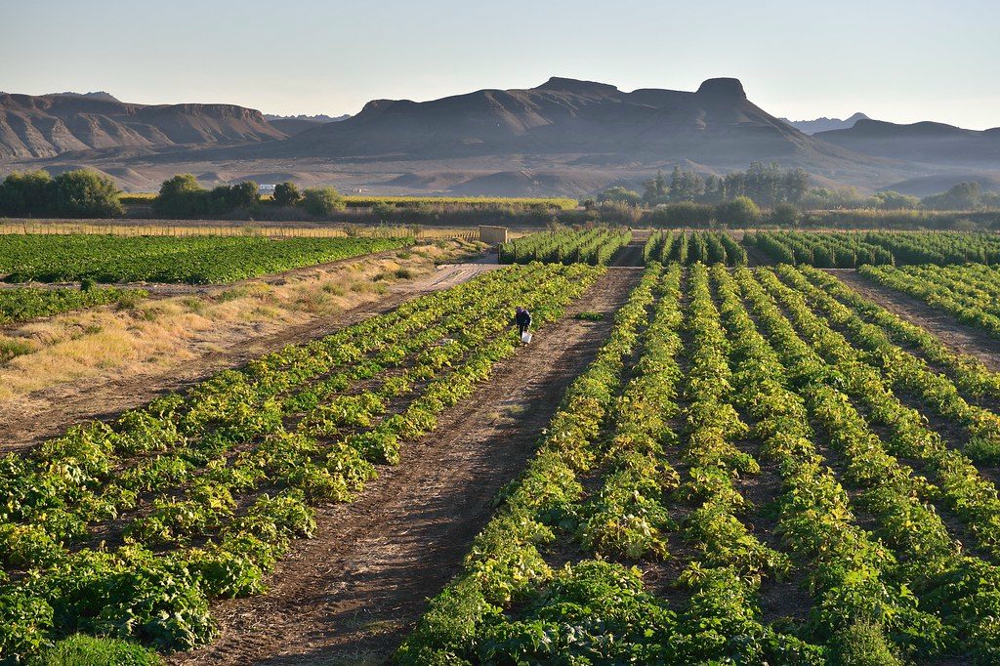
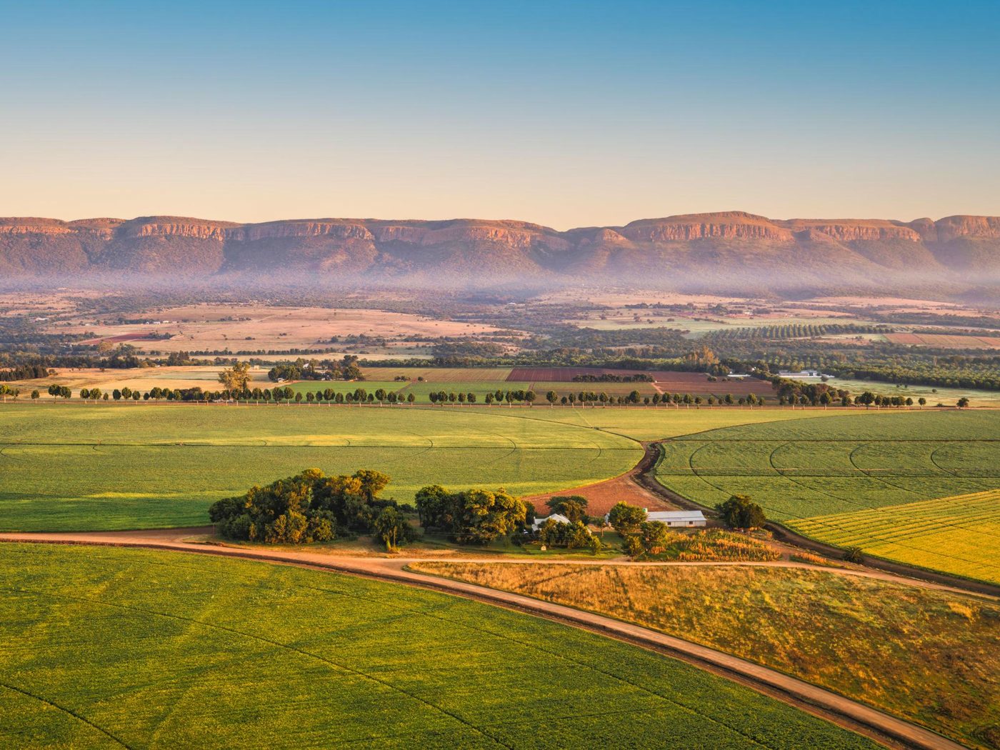

01
Soil Health
Good soil management supports productivity across growing seasons.
Vegetables, maize and seasonal produce form part of the crop production story.

We grow vegetables, maize and seasonal produce using methods focused on soil health, water care and good yields.
The page uses plain language because customers usually need to know what is available and how to make an enquiry.
Ask About Produce →Good soil management supports productivity across growing seasons.
Efficient use of water helps protect resources while supporting crops.
Planting and production need to match local conditions and demand.

The website places product information close to contact links so customers do not have to search through the page for the next step.
Make an Enquiry →